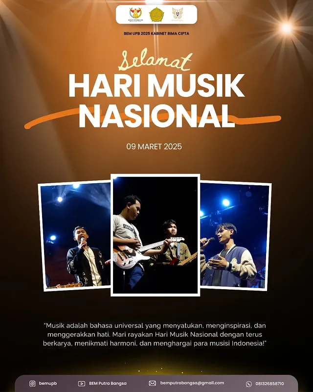
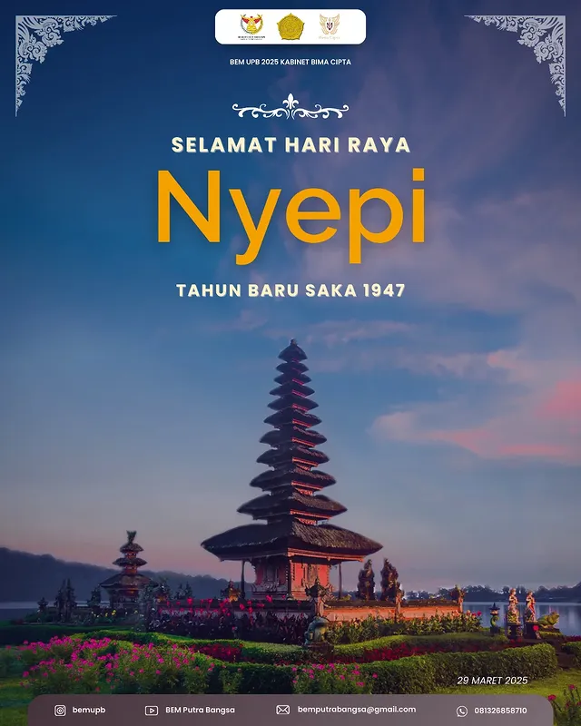

Next.js Site
Next.js Site
Web LP3M UPB
Website LP3M Universitas Putra Bangsa yang dibangun ulang menggunakan Next.js dan MySQL. Hadir dengan tampilan yang lebih modern dan performa yang lebih optimal dibanding versi WordPress.
Jelajahi seluruh karya web development, desain grafis, UI/UX, dan produksi video yang pernah saya kerjakan untuk kampus, organisasi, bisnis, dan project digital.
Next.js Site
Website LP3M Universitas Putra Bangsa yang dibangun ulang menggunakan Next.js dan MySQL. Hadir dengan tampilan yang lebih modern dan performa yang lebih optimal dibanding versi WordPress.
 Laravel App
Laravel App
Aplikasi web manajemen rapat BEM UPB dibangun dengan Laravel (PHP), database MySQL, wireframe Figma, dan hosting Anymhost. Fitur: penjadwalan rapat, pengumuman via WhatsApp (Fonnte) dan email SMTP, presensi berbasis geolocation dan foto selfie, serta notulensi dan dokumentasi rapat.
🌐 Kunjungi Website WordPress Site
WordPress Site
 WordPress Site
WordPress Site
Website company profile toko roti Zaza Bakery berbasis WordPress. Menampilkan katalog produk, fitur pemesanan via WhatsApp, testimoni pelanggan, FAQ, dan tautan media sosial.
 Django App
Django App
Aplikasi web pendaftaran daycare dibangun dengan Django (Python), HTML, CSS, dan SQLite. Fitur pendaftaran anak secara online, pemantauan perkembangan anak, dan informasi parenting.
 WordPress Site
WordPress Site
Website informasi wisata Kebumen berbasis WordPress. Menampilkan daftar destinasi wisata yang dikategorikan berdasarkan jenisnya. Setiap destinasi dilengkapi dengan foto, alamat lengkap, dan deskripsi tempat wisata.
🌐 Kunjungi Website HTML / CSS
HTML / CSS
Website pendaftaran bimbingan belajar UTBK menggunakan HTML dan CSS murni, dengan tampilan yang bersih dan proses pendaftaran yang mudah digunakan.
 UI/UX Design
UI/UX Design
Rancangan UI/UX aplikasi My UKM untuk pengelolaan Unit Kegiatan Mahasiswa secara digital. Memudahkan pendaftaran anggota dan pencatatan presensi kegiatan UKM melalui aplikasi mobile.
 Android App
Android App
Aplikasi mobile Android untuk mendukung proses perkuliahan. Fitur: membuat dan mengelola catatan kuliah, serta akses cepat ke berbagai platform pendukung seperti AI, Perpusnas, jurnal ilmiah, dan sumber belajar lainnya.
HTML / CSS
Website pendaftaran Unit Kegiatan Mahasiswa (UKM) Universitas Putra Bangsa menggunakan HTML, CSS, dan database MySQL. Memudahkan mahasiswa mendaftar ke UKM pilihan secara online.






 YouTube
YouTube
Video profile resmi BEM Universitas Putra Bangsa 2025 – Kabinet Bima Cita. Menampilkan visi, misi, dan semangat pengabdian kabinet dalam satu karya sinematik.
Tonton di YouTube YouTube
YouTube
Dokumentasi aksi papermob spektakuler dalam rangkaian kegiatan Prospek UPB 2025. Ratusan mahasiswa baru membentuk formasi visual yang memukau sebagai simbol kebersamaan dan semangat kampus.
Tonton di YouTube